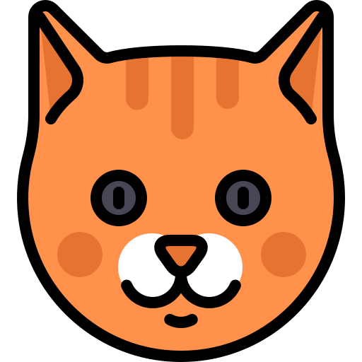

About Me
About Me
I was born and raised in Northern Virginia, about 30min outside of Washington D.C. I loved to get into trouble and was very much disliked by teachers and parents of friends. By highschool I was basically either playing video games, watching anime, or sleeping. I did not care for learning in the slightest. I scraped by graduation, dropped out 3 weeks into community college then worked as a delivery driver occupying space my mother's basement. Eventually something clicked and I knew I had to do better, suddenly I loved learning. Now all I want to do is learn.
 My Hobbies
My Hobbies
I have been a gamer my entire life, I can remember learning shapes in elementary school and being the only kid who knew about hexagons because of the hexagon key needed in Hobbe Cave in Fable. My main focus was on Nintendo though, Pokemon has defined who I am in so many ways but Zelda, Mario, Kirby, etc. have all had a huge impact on me. I also am very much into anime and Japan in general. I have family from Japan and am currently learning Japanese. Though I put martial arts on hold, I still get very active with my favorite hobbies of running and playing Pokemon Go, often at the same time!
 Home Life
I have a very relaxed and fortunate home life. I still occupy my mother's basement but now I help with rent until I move out in a few months. I have a wonderful cat named Gohan (after Son Gohan from Dragonball Z) who is my best friend and partner in crime. I couldn't make it through each day without him! He is often found sleeping on my lap while I am coding! I spend most of my time at home these days either sitting on my MacBook in bed studying or at my PC desktop also studying!